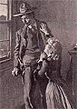

THE VIRGINIAN
GETTING THE DATE
1901
President McKinley shot on September 6th in Buffalo, NY, by anarchist Leon Czolgosz. He died on September 14th. [Greg]
OCTOBER 16: After an afternoon meeting, President Theodore Roosevelt informally invited Booker T. Washington to remain and eat dinner with him, making Washington the first black American to dine at the White House with the president. A furor arose over the social implications of Roosevelt's casual act. [Eve]
1902 -- YEAR OF PUBLICATION
According to 1900 census, one out of every five Americans lives in an urban center with 100,000 or more residents. In 1902 record numbers of immigrants flow into the U.S, most from Italy, Austro-Hungary and Russia. [Josh]
92% of all cocaine sold in U.S. cities in this year is in the form of an ingredient in tonics and potions available from local pharmacies. [Pam].
Other books published this year include Upton Sinclair's
The Jungle
, Henry James'
The Wings of the Dove
and Jack London's
The Iron Heel
. [Sidney]
The federal government begins to file anti-trust suits to break up monopolies, beginning with the railroad holding company North Securities and the beef trust in Chicago. [Sidney]
The 20th Century Limited sets a record by traveling the rails from New York to Chicago in 20 hours. [Josh]
The fossils of a Tyrannosaurus rex are discovered by Barnum Brown in Hell Creek, Montana [Katie F.]
John Steinbeck was born. [Terry]
Newlands Reclamation Act authorizes the building of irrigation dams across the west. [Aisha]
The first movie theater in the United States, "Electric Theater", opened in Los Angeles, California. [Kristen]
DECEMBER 28: The first indoor professional football game is played in New York City's Madison Square Garden. [Pam]
1903
NOVEMBER 18: The U.S. and the Republic of Panama sign a treaty enabling the U.S. to build and operate a canal connecting the Atlantic and Pacific oceans. [Eve]
DECEMBER 17: First successful flight in heavier-than-air mechanically propelled airplane by Orville Wright on December 17th, near Kitty Hawk, NC. [Greg].
An 11-minute Edison film,
The Great Train Robbery
, is shown in theaters. [Aisha]

ILLUSTRATIONS